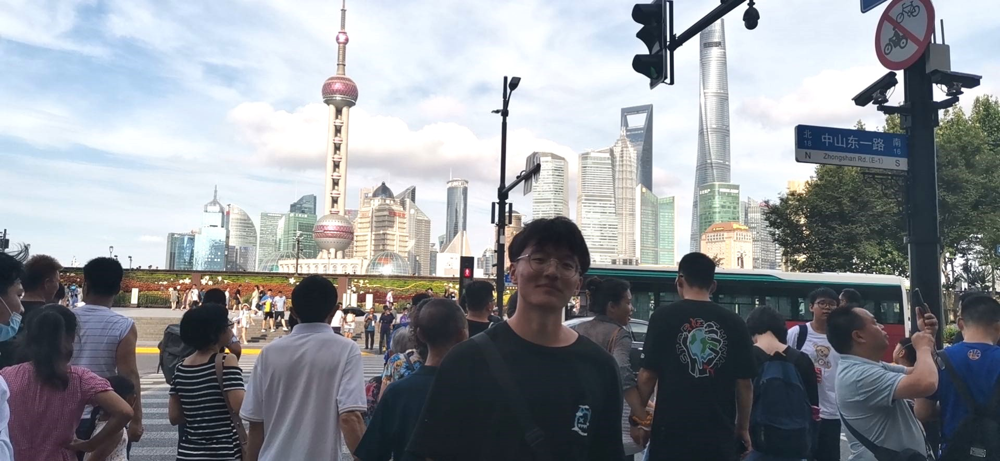
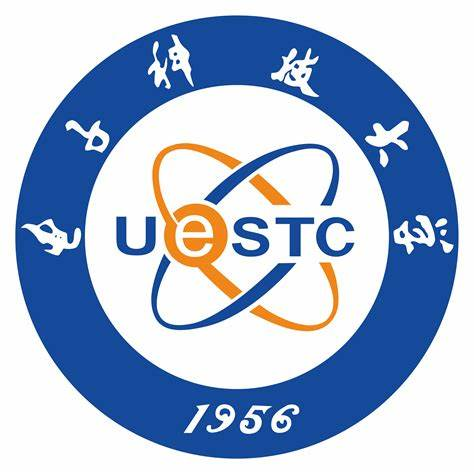

Jinhua Zhang
Ph.D. Student
|
 |
Biography
[ ]
]
I received the B.S. degree from the School of Computer Science and Technology, Shandong University, Qingdao, China, in 2023. I am currently a first-year Ph.D. student at the School of Computer Science and Engineering, University of Electronic Science and Technology of China, Chengdu, China, supervised by Prof. Shuhang Gu. My current research interests include image and video generation.
Publications
[ ]
[]
[
]
[]
[ ]
]
2025
MVAR: Visual Autoregressive Modeling with Scale and Spatial MarkovianConditioning.
Under review, 2025(Image Generation) By introducing scale- and spatial-Markov assumptions, the proposed MVAR framework mitigates redundancy in visual autoregressive modeling, enabling efficient multi-scale generation with reduced memory and computational costs while maintaining competitive performance.
[
 PDF]
[
PDF]
[ Preprint]
[ Code]
Preprint]
[ Code]
Generative Image Compression by Estimating Gradients of the Rate-variable Feature Distribution.
Under review, 2025(Image Compression) By reformulating compression as a forward diffusion process, the proposed diffusion-based GIC model enables direct and efficient image reconstruction with smooth rate control and photo-realistic quality, outperforming prior methods across perceptual and statistical metrics.
[
PDF]
[ Preprint]
[ Code]
2024

PerLDiff: Controllable Street View Synthesis Using Perspective-Layout Diffusion Models
Under review, 2025(Image Generation) By incorporating 3D geometric priors into the generation process, the proposed PerLDiff model enables precise object-level control in street view image synthesis, thereby enhancing controllability and improving data generation accuracy for autonomous driving scenarios.
[
PDF]
[ Preprint]
[ Code]
Education
|  |
School of Computer Science and Engineering, UESTC, Chengdu, P.R. China |
|
School of Computer Science and Technology, Shandong University, Qingdao, P.R.
China
|
Selected Honors and Awards
- Dec 2024, Academic Scholarships of UESTC.
- Dec. 2022, Academic Scholarships and National Encouragement Scholarships of Shangdong University.
Internship Experience
- Nov. 2023 - Jun. 2025, Research Intern at Alibaba DAMO Academy, focusing on generative modeling and vision-language pretraining.